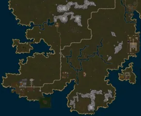
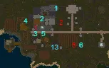
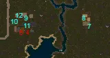
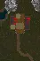

Whisperdale and the Darkwoods
The night elves' town, for Dexterity builds. Lord Vezryl is in the hall at 409,3429 with Lady Vezryl's shop beside him; the spawn gate is at 389,3456 with the Whisperdale Steward at 393,3458; the bank at 381,3433. East along the road lies Autumn (bank 604,3420), east of that the Hunting Lodge, north the Vezryl estate.
Whisperdale has the most quests of the three, a full set written for archers, and the only quest on the mainland that gives the Totem of the Wolf Pup.

The DarkwoodsAE
WhisperdaleAE
Autumn and the Hunting LodgeAE
Lord Vezryl's estateAEWhisperdale at a glance


The order
Level 8 to 10: the first hour
- Click the gate, align, and go to the hall. Take Into The Darkwoods from Chancellor Geldryd before your first mission: only missions done after you took it count for it.
- Take a mission from Lord Vezryl.
- Around town, take Loyal, Oozing on the Job, Search for Jhulara, Correspondence (250 gold on the spot), Foul Beasts, A Shadow Roams the Lands, The Bane of Whisperdale and Advanced Ranger Training.
- Loyal, if you have no totem. With Zerev, choose "I'm from across the sea" and "What do you mean?", then agree to look for the dog; if the quest does not appear, talk to him again. The pups are north of town near the coast (around 408,3352). Each wrong one says it has nothing on its neck. Ours was the fifth.
- Oozing on the Job, the first three rounds: the slimes are all around town and towards Autumn.
Level 10 to 12: Autumn
- Walk the road to Autumn for Search for Jhulara. Take Noisy Neighbors from Vesos and speak to Lord Solfein.
- Astari Supplies, at the shelter north-east of Autumn. What lives under it is level 3 to 9, and the sash is the best early piece of armor in the region. One of the guides says only night elves may do it, and its own walk through the quest does not bear that out; we could not settle it.
- The Marsh Dungeon as far as Owyn: fight south through the Marsh Lights (8) and bring him one Cooked Greely, which can be bought.
Level 12 to 16
- Noisy Neighbors and Steady Hand together: the totems stand in the camp of the Lizard Men and Dragoons on the north-west coast, and Steady Hand wants 50 Dragoons.
- Oozing on the Job, the Viscous Molds.
- Foul Beasts. The Wargs are north-east of Autumn. The Brown Bears on the same ground are level 23. Wargs from the pit near Parian do not count.
Level 16 to 20
- A Shadow Roams the Lands, with Stick Jab on the same Shadows if you are an archer.
- The rest of the Marsh Dungeon: Gloom Lights and Great Lights (18) for the two boots, then, wearing the boots, kill until the boss Baneshine (level 20, 560 health) appears. The crystal goes to Legrant and then to Lord Vezryl.
- At 15 put on the Halfplate, at 20 the Warg Eye Amulet and the archer pieces.
Level 20 to 26
- Termigon Armor and Wait For It on the same Termigon Warriors, at the mound south-east of Autumn (around 664,3544). The mittens are worth it for any build. The wiki says Burslord wants Varios's quests done first.
- Time for Revenge. The Queen appears rarely and the kill does not always give the update.
- Sentimental Value, if you want the experience; the dagger is weak, and the bottom of that temple holds creatures of level 27 to 32.
- One trip to Silvest by portal: Correspondence, Spice It Up, and Sathis.
After about level 25 nothing new is left around Whisperdale. From 28 the missions repeat Swamp Slugs and Deep Shadows, and from 33 they send you out towards Redwake.
The archer quests
Tilis Oakwoven sends you to six trainers. Each lends a weapon, and only kills with that weapon count; the game tells you so every time you get it wrong.
| Quest | Trainer | Skill | Kill with the lent weapon | Reward (wearable at 20) |
|---|---|---|---|---|
| SnappyAE Guides | Tagonis Weatheroot, at the estate | Thrown 15 | 50 Skeletal Pups (6) | Greaves (+3 Dex +1 Str, armor 22) |
| Loading the SlingAE Guides | Alithian Leafwhisper, in the inn at Autumn | Thrown 12 | 50 Cultists (9) | Helm (+1 Dex +2 Con) |
| Steady HandAE Guides | Silvi Thrushwood, in town, north of the big farm | Bows 12 | 50 Dragoons (12) | Belt (+1 Dex +2 Str) |
| Stick JabAE Guides | Ellini Shadevail, at the estate | Bows 20 | 50 Shadows (17) | Boots (+3 Dex +1 Str) |
| Slow and SteadyAE Guides | Rigel Underdark, next to the bank in Autumn | Crossbows 13 | 75 Termigon Workers (20) | Cape (+2 to all four) |
| Wait For ItAE Guides | Tvistia Llywenen, in town, south of the big farm | Crossbows 20 | 75 Termigon Warriors (24) | Gloves (+2 Dex +2 Con) |
| Advanced Ranger TrainingAE Guides · Wiki | Tilis Oakwoven | The six above | Cuirass (+4 Dex +3 Str, armor 25) | |
3 pictures of Advanced Ranger Training | ||||


A patch in 2025 lowered what the trainers ask to "10 or more", but the lent weapons still need the skill levels above to hold. The whole set is +16 Dex, +9 Str, +6 Con in seven pieces.
It takes three weapon skills (Bows 20, Crossbows 20, Thrown 15). A bow user can do the two bow quests in passing. The other four are worth it if you want the full set, and the experience pool every quest here pays can be spent on raising the other two skills, once you have a first level in each from use.
Fishing
Paezer's line of quests is long and peaceful, and its first step is worth doing for anyone who can fish a little: the Tackle Box is a 20-slot container that halves the weight of its contents. It needs Fly-casting 5 and "Spice It Up" from Silvest. Save every fish you catch from the start, since his second step asks for 30 of one kind, and which kind differs from character to character. After the second quest it needs Fly-casting 30 and far-off towns.
Hunting around Whisperdale
| Level | Creature | Where |
|---|---|---|
| 8 to 11 | Slimy Oozes (4), Skeletal Pups (6), Green Slimes (6) | Around and north of town |
| 8 to 11 | Large Slimes (7), Rancid Zombies (7), Lizard Men (8) | Around Autumn; the north-west camp |
| 12 to 16 | Dragoons (12) | North-west coast (around 440,3270); south-east of Autumn |
| 12 to 16 | Skeletal Mages (12), Wargs (14) | East and north-east of Autumn |
| 16 to 22 | Shadows (17), Flesh Blobs (18) | West of the estate (around 470,3160) |
| 16 to 22 | Kobold Brigands and Mages (16, 17) | Around 800,3225 |
| 16 to 22 | Goblins (16 to 19), Termigon Workers (20) | South-east of Autumn |
| 22 to 30 | Termigon Warriors (24), Ghosts (23) | The mound; Mnemmon Gaol |
| 22 to 30 | Deep Shadows (27), Swamp Slugs (27) | North of the estate; around 745,3295 |
Leaving Whisperdale
- The portal to Lotor's Summer Palace is just east of town at 472,3481.
- On foot, the road runs north-east past Autumn to Darkfell, then Gulley and Josody. The safe zone ends at the river before Darkfell.
- Leave Redwake alone. It is a town of the other side, and its guards attack characters of good standing.
- The game lets you take "Boulder Toss" in Darkfell at any level. It asks for 300 Ettins of level 54.